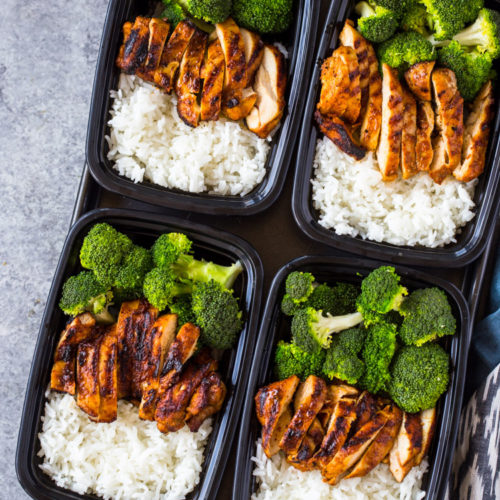

Chicken, Broccoli, and Rice

Description
A wonderfully simple yet delicious dish for the
gym bro. This recipe will create two servings.
Ingredients
- 4 - Chicken tenderloins
- 1 - Cup of long grain rice
- 1 - Cup of water
- 1 - Teaspoon of garlic powder
- 1 - Teaspoon of cumin
- 1 - Teaspoon of paprika
- 1 - Teaspoon of chili powder
- Salt and pepper to taste
- Spray oil of choice
- Frozen bag of broccoli
Directions
- Wash rice until water runs clear
- Add rice to the cooking method of choice alongside
1 cup of water. A rice cooker is recommended.
- Add chicken to a bowl along with all spices.
- Mix thorougly then spray a light coating of oil
on each piece.
- Place chicken in the air fryer or preheated oven.
- Flip the chicken halfway through
- Toss the bag of frozen broccoli into a microwave
and follow the package instructions.
- Once everything is prepared, spilt everything evenly
into 2 containers of your choice.
- Add salt and pepper to taste
- Enjoy!
Return to Homepage